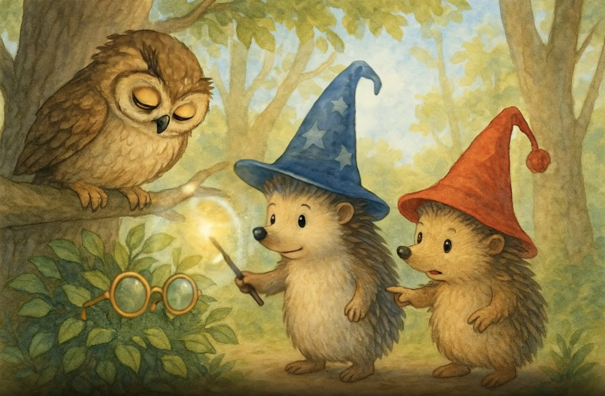

The Adventures of Mr. Pinpin and Mr. PomPom - The Quest for the Owl's Glasses - Page 1

It was a beautiful morning in the Enchanted Forest when the hedgehog brothers, Mr. Pinpin with his blue star-decorated wizard hat and magical wand, and Mr. PomPom with his cheerful red cap, were strolling among the golden trees. Suddenly, they heard a sad sigh. "Who's there?" asked Mr. PomPom. From his branch, the Wise Owl looked down at them with squinting eyes. "Oh, little friends," said the owl, "I've lost my glasses and without them I cannot read my spell books."

"Don't worry, Mr. Owl! We'll help you!" exclaimed Mr. Pinpin with determination, raising his magical wand which glowed softly in the morning light. Mr. PomPom nodded enthusiastically. "Yes, we're very good at finding lost things. Once I found my cousin's favorite acorn in the whole forest." The owl blinked hopefully as the two brothers began searching among the golden leaves covering the forest floor.

"I remember I was reading right here when I felt them slip off," said the Wise Owl, pointing with his wing toward a pile of leaves near the roots of the great oak tree. "But my eyes aren't what they used to be without my glasses." Mr. Pinpin approached the indicated spot, his magical wand in hand. "Hmm, let me think... What spell would be good for finding lost objects?" he murmured, while Mr. PomPom was already digging through the leaves with his little paws.

"I know! I'll use the 'Reveal the Hidden' spell!" announced Mr. Pinpin confidently. He waved his wand in the air drawing a bright star and pronounced: "Perdidus Encontradus Volarus!" Suddenly, a golden flash illuminated the forest clearing, and to everyone's amazement, the owl's glasses appeared floating magically in the air, glowing with a soft, warm light. "It worked!" shouted Mr. PomPom, hopping with joy.

The Wise Owl opened his eyes wide, marveling at the sight of his beloved glasses floating in the air like a small golden star. "Oh, my precious glasses! I missed them so much!" he exclaimed with emotion. "Without them, I couldn't read my potion books or my starry sky maps." Mr. Pinpin kept his wand raised, focused on keeping the spell stable. "Don't worry, Mr. Owl, we'll guide them to you," he said with a kind smile.

"Come on, glasses, go to your owner," whispered Mr. Pinpin as he moved his wand in gentle circles. The glasses began to float slowly toward the owl, dancing in the morning air like a golden butterfly. Mr. PomPom, not wanting to be left out, stood on his tiptoes and blew gently toward the glasses. "I'm helping too!" he said proudly. "My magical hedgehog breath pushes them in the right direction." The owl watched with anxiety and gratitude as his precious glasses came closer and closer.

The golden glasses gracefully approached the owl, who watched them without blinking, as if afraid they would disappear if he looked away. "They're almost here," he said softly, his heart full of hope. Mr. Pinpin maintained his concentration, with small beads of sweat on his forehead from the magical effort. "Just a little more," he murmured. Mr. PomPom clapped softly to encourage his brother. "You can do it, Pinpin. You're the best hedgehog wizard in the forest."

With an elegant movement, the Wise Owl extended his broad brown wings, creating a gentle breeze that made the leaves dance around. "I almost have them!" he exclaimed excitedly, stretching his right wing toward the glowing glasses. The morning sunlight filtered through the branches, creating a magical moment as the glasses slowly approached their destination. Mr. Pinpin and Mr. PomPom held their breath, watching with anticipation the crucial moment of reunion.

And it happened! With the delicacy of a falling feather, the golden glasses landed perfectly on the Wise Owl's beak. "We did it!" shouted Mr. Pinpin and Mr. PomPom in unison, jumping for joy. The owl remained very still for a moment, as if he couldn't believe his beloved glasses had returned. A tear of happiness glistened in his right eye. "Oh, my dear friends," he whispered emotionally, "I don't know how to thank you."